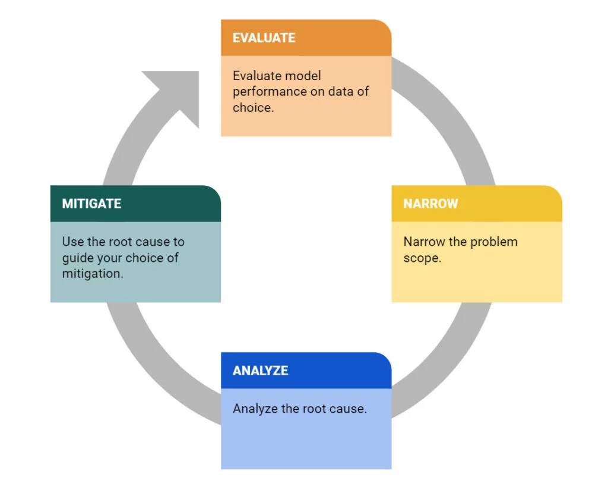
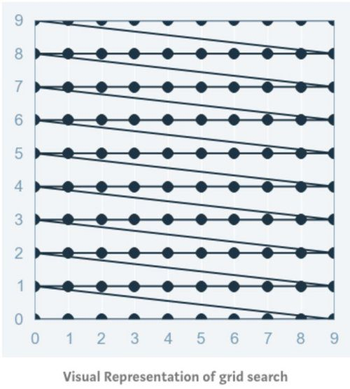
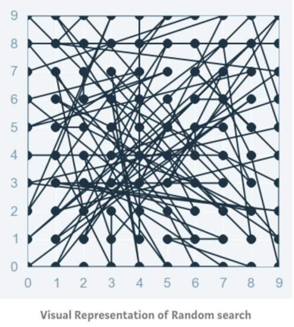

Primers • Model Debugging
- Debugging ML models
- Framework for Debugging
- Sanity Check: Model Architecture
- Data issues
- 1. What is Model Drift?
- 2. Types of Model Drift
- 3. Monitoring and Measuring Drift
- 4. General Strategies for Drift Resolution
- 5. Additional Resources
- Misaligned optimization and evaluation
- Pipeline issues
- Bias and Variance
- Underfitting
- Overfitting
- Gradual Complexity Increase
- Gradient checking
- Visualizations
- Weight initialization
- Learning rate
- Optimizer
- Regularization
- Grad-CAM
- Student-Teacher approach
- Hyper-Parameter Optimization (HPO)
- References
- Citation
Debugging ML models
- Debugging machine learning models is a critical process for identifying and resolving issues that affect the models’ performance and reliability.
- Debugging involves a systematic approach to looking at each component of the ML development pipeline, from the data to the model architecture and its hyperparameters, to the predicted output.
- By performing sanity checks, examining performance metrics, and scrutinizing error patterns, practitioners can uncover common issues like overfitting, underfitting, data leakage, or feature selection problems. Debugging also involves leveraging visualizations, interpreting model outputs, and seeking domain expertise to gain deeper insights into the model’s behavior. Debugging ML models is important for avoiding costly mistakes, improving performance, and enhancing interpretability and explainability.
Framework for Debugging
- Truera detailed a general method of debugging ML models:
- Evaluate the model performance on relevant data:
- To effectively debug performance issues in a machine learning model, it is crucial to evaluate the model’s performance on relevant data and understand the context of the problem. Here are key considerations for debugging based on different scenarios:
- Low training accuracy: If the model’s accuracy on the training data is low, it may indicate that the model is underfitting or that the relationship between the inputs and outputs is inherently noisy. Insufficient data may also be a factor.
- Low test accuracy: If the model’s accuracy on the test data is low, check the accuracy on the training set as well. If the training accuracy is also low, it suggests issues like underfitting or inherent noise. However, high training accuracy with low test accuracy is indicative of overfitting, which can be addressed through regularization techniques.
- Performance drop across datasets: If the model’s performance drops when evaluated on different datasets, it could be a sign of overfitting or a change in the data or label distribution. If there are shifts in the input-output relationship or concept drift, retraining the model on new data may be necessary.
- Poor performance on a specific segment: Evaluate the significance of the problem segment. If it represents a large portion of the population, investigate if the model performed well on this segment during training or testing. For smaller segments, consider if there was enough data to effectively model them.
- Debugging single-point errors: To debug misclassifications or errors for individual data points, employ local explanation techniques. Examine the features that influenced the model’s prediction and assess their reasonableness. Analyzing the model’s performance in the neighborhood of the point of interest can provide additional insights.
- Narrow the problem scope:
- Once you have identified the datasets where the model performs poorly, it is important to narrow down the problem scope and investigate specific regions or instances of poor performance. Treating the dataset as a single unit may not provide actionable insights, as the model’s performance may vary across different regions or data points.
- By breaking down the problem, you can look for patterns or anomalous signals that are associated with the occurrence of poor performance. This could include examining data quality issues such as missing values, changes in the ground truth rate, shifts in data values, bugs in the data processing pipeline, or even external events that might have influenced the data.
- By identifying these specific factors or signals that correlate with the problem, you can gain a better understanding of the underlying causes and develop a targeted action plan to address them. This approach allows for more focused debugging and troubleshooting, increasing the chances of effectively resolving the performance issues in the model.
- Analyze the root cause of the problem:
- To further investigate the performance issues, it is important to identify the root cause of the problem. Start by examining whether the regions with high errors are well-represented in the training data. If these regions are underrepresented, the model may not have enough examples to learn the patterns effectively. In such cases, increasing the coverage of training data in those regions may help improve performance.
- If the problematic regions are well-covered in the training set, other factors may be contributing to the low model performance, such as noisy labels. It is also crucial to analyze whether there is any data drift, which can be done by studying the distribution of each feature and assessing if the model’s performance is disproportionately worse on “newer” data points. Additionally, investigate whether there are changes in the label distribution alongside data shifts, as this may indicate concept drift.
- Furthermore, utilize explanation frameworks to gain insights into the model’s decision-making process. Identify the features that are driving the model predictions and assess whether these features align with the expected conceptual understanding of the problem. Monitor if these features are changing over time, as it can indicate the need for model adaptation to evolving patterns. Pay attention to specific feature values that correlate with lower model performance, as this might indicate overfitting or the model relying excessively on certain ranges of feature values.
- By understanding the root cause of the performance issues and investigating factors like data representation, data drift, label distribution, and feature importance, you can develop targeted strategies to improve the model’s performance and address any underlying issues.
- Mitigate the issue:
- Once the root cause of the performance issues has been identified, it is essential to select appropriate mitigation strategies based on the analysis. Here are some insights from the root cause analysis along with corresponding amelioration strategies:
- If specific features are strongly contributing to the low performance, consider removing or regularizing those features to mitigate overfitting on noisy values. However, carefully evaluate the overall influence of the feature on model predictions, as important features may naturally contribute to errors even when the model is performing well.
- In cases of data or concept drift, retraining the model is necessary. Add representative data or labels that capture the shifted patterns to the original training data. Alternatively, incorporate alternative data sources that better align with the factors causing the drift.
- Noisy labels that do not match similar points indicate potential mislabelling errors in the dataset. Identify these instances and involve human experts to verify and correct the labels.
- By aligning the chosen mitigation strategies with the insights gained from the root cause analysis, model developers can effectively debug and improve their models in a more targeted manner. This approach enables more precise and tailored actions to address the underlying issues and enhance the overall performance of the model.
- Evaluate the model performance on relevant data:
- The image below (source) displays the overall general debugging framework that can be leveraged for finding bugs in ML models.

- Below, we will look into more specific root cause issues and different ways we can handle them.
Sanity Check: Model Architecture
- It may sound counterintuitive, but one method for running a sanity check on our model is to overfit it on a minibatch (or a small dataset) to ensure that there are no bugs and near-perfect performance on the training set is achieved.
- We can then set the batch size to what fits in the GPU memory for maximum vectorization/parallelization.
- Overfitting a model on a small mini-batch of data is sometimes a useful technique for debugging a deep learning model. Overfitting on a mini-batch means training the model to fit the mini-batch perfectly, even if it results in poor generalization performance.
- The reason why this can be useful for debugging is that it allows you to quickly identify issues with the model architecture or training process, such as high bias or high variance.
- For example, if the model is not able to overfit a small mini-batch, it may indicate that the model is too shallow or has not been trained for enough epochs. On the other hand, if the model overfits the mini-batch too quickly, it may indicate that the model is too complex or that the learning rate is too high.
Data issues
- As the saying goes, “you put garbage in, you get garbage out” of the model so making sure the data is clean is a very important step.
- The first thing is to make sure the data is labelled correctly and their is no noise present in the data collection pipeline as it will lead to an inaccurate model.
- Insufficient data and/or labels: Inadequate training data or missing relevant features can lead to performance degradation in machine learning models. This can be addressed by adding more helpful features or expanding the precision of existing features. Additionally, if certain segments of the population are not well represented in the training data, it can result in poor predictions for those subgroups. Increasing the number of training examples for underrepresented regions can help alleviate this issue.
- Shifting data and/or labels: Data drift and concept drift are two common issues related to shifting data. Data drift occurs when the distribution of input data changes over time, which can cause a model trained on previous data to not generalize well to the new data. Concept drift refers to a shift in the underlying relationship between inputs and outputs, requiring the model to be retrained to capture the new relationship. Monitoring data and labels can help identify potential data or concept drift, allowing for timely actions to be taken.
- By understanding these issues and employing appropriate strategies, such as data augmentation, feature engineering, adding more training examples, and monitoring data and labels, you can address and mitigate the impact of insufficient data, shifting data, and shifting labels on your machine learning models.
1. What is Model Drift?
- Definition: Model drift refers to changes in a model’s predictions over time. This can be due to changes in the model’s inputs, outputs, or the actuals (ground truths).
- Importance: Monitoring for model drift is crucial because it helps maintain the accuracy and relevance of a machine learning model in a changing environment.
2. Types of Model Drift
- Prediction Drift
- Definition: Changes in the model’s predictions over time.
- Resolution: Retrain the model with additional or updated data, or replace the model if necessary.
- Concept Drift
- Definition: Shift in the statistical properties of the target variable.
- Resolution: Adjust the model to account for new patterns, reweight data, or refit the model.
- Data Drift
- Definition: Change in the statistical properties of input data.
- Resolution: Update the model to reflect new data distributions, and continually monitor inputs.
- Upstream Drift
- Definition: Changes in the data pipeline feeding the model.
- Resolution: Monitor and address data quality issues, such as missing values or feature cardinality changes.
3. Monitoring and Measuring Drift
- Methods: Drift is measured by comparing the distributions of inputs, outputs, and actuals between different periods using statistical distance measures like the Population Stability Index (PSI), Kullback-Leibler divergence, Jensen Shannon divergence, Wasserstein’s Distance, and Euclidean Distance.
-
Importance: Quantitative measures are necessary to objectively assess how much and in what ways the model’s data distributions are changing.
- The below text is referenced from Arize.
- Population Stability Index (PSI): Population Stability Index looks at the magnitude which a variable has changed or shifted in distribution between two samples over the course of a given time. PSI is calculated as: PSI = (% Actual – % Expected) x ln(% Actual / % Expected).
- Kullback Leibler divergence (KL divergence): The Kullback-Leibler Divergence metric is calculated as the difference between one probability distribution from a reference probability distribution. KL divergence is sometimes referred to as ‘relative entropy’ and best used when one distribution is much smaller in sample and has a large variance.
- Jensen Shannon divergence: Jensen-Shannon is an asymmetric metric that measures the relative entropy or difference in information represented by two distributions. The advantage of JS divergence over other metrics is mostly related to issues with empty probabilities for certain events or bins and how these cause issues with KL divergence and PSI.
- Wasserstein’s Distance: The distance between two probability distributions over a given region or area.
- Euclidean Distance: The simple euclidean distance check determines if the group of production data’s average centroid has moved away from the baseline group
- While each of these distribution distance measures differs in how they compute distance, they fundamentally provide a way to quantify how different two statistical distributions are.
4. General Strategies for Drift Resolution
- Continuous Monitoring: Keep track of the model’s performance indicators to detect drift early.
- Frequent Updates: Regularly update the model with new data and insights.
- Robust Data Pipeline: Ensure the data pipeline is robust and sensitive to changes in data quality.
- Model Adaptation: Be prepared to adapt or retrain the model in response to significant drifts.
5. Additional Resources
- The text mentions several courses, papers, and guides for deeper understanding and technical strategies for handling various types of drift, such as “ML Observability Fundamentals” by Arize, research papers from institutions like Cornell University, and practical guides from Google Cloud.
In summary, model drift is a critical aspect of machine learning model maintenance and requires continuous monitoring and adaptive strategies for effective management. Understanding the different types of drift and their implications is key to ensuring that machine learning models remain accurate and reliable over time.
Misaligned optimization and evaluation
- One common issue is when the chosen training procedure optimizes a different metric than the one used for evaluating the model’s final performance. For example, optimizing for log-loss during training but evaluating precision or recall can lead to suboptimal results, especially in cases of imbalanced datasets. It’s important to ensure that the training and evaluation metrics align with the desired model performance.
- To address misaligned optimization and evaluation, it’s necessary to choose appropriate evaluation metrics that align with the desired outcome and incorporate them into the training process. Understanding the business requirements and domain-specific considerations can help select the right metrics.
Pipeline issues
- Machine learning models often rely on pipelines that involve feature engineering and data preprocessing. Any failures or changes in the pipeline, whether upstream or downstream of the model training or serving process, can significantly impact the model’s performance. It’s crucial to monitor and maintain the entire pipeline to ensure consistent and reliable model performance.
- To mitigate pipeline issues, regular monitoring, testing, and version control of the pipeline components are essential to identify and resolve any issues that may impact the model’s performance.
Bias and Variance
- Bias:Bias refers to the error introduced by approximating a real-world problem with a simplified model. A model with high bias tends to make simplistic assumptions and may not capture the complexity of the underlying data. High bias often leads to underfitting, where the model fails to capture the patterns and relationships present in the training data, resulting in poor performance both on the training and test/validation datasets.
- Variance:Variance refers to the amount of fluctuation or inconsistency in the model’s predictions when trained on different subsets of the training data. A model with high variance is highly sensitive to the training data and can learn patterns specific to the training samples rather than generalizing well to unseen data. High variance often leads to overfitting, where the model learns to fit the noise or outliers in the training data, resulting in excellent performance on the training set but poor generalization to new, unseen data.
Underfitting
- Underfitting occurs when a model fails to accurately capture the relationship between the inputs (X) and outputs (Y) of the training data, even if such a relationship exists. This can happen when the model is not complex enough (under-parameterized) or hasn’t been trained sufficiently to learn the relationship. Underfit models tend to have high bias and low variance.
- To address underfitting, you can consider increasing the model’s complexity, adding more features or layers, or training for a longer duration.
Overfitting
- Overfitting happens when a model becomes too focused on capturing the nuances and noise of the training data, resulting in poor generalization to unseen data. It occurs when the model is overly complex (over-parameterized) and fits itself too closely to the training data, including the noise. Overfit models tend to have low bias and high variance.
- Techniques like regularization can also help prevent overfitting by adding constraints to the model’s parameters. Evaluating the model’s performance on unseen data and using techniques like cross-validation can help identify and mitigate both underfitting and overfitting issues.
Gradual Complexity Increase
- Instead of starting with the most complex model architecture, it’s better to begin with a simpler version and gradually increase it’s complexity.
- By incrementally adding layers, neurons, or features, you can pinpoint when the model’s performance takes a downturn and this helps assess the issues related to model complexity, capacity, or architecture choice.
Gradient checking
- This involves comparing the gradients calculated analytically using backpropagation with the gradients calculated numerically using finite differences. If the gradients differ significantly, it may indicate an issue with the model implementation or the gradient computation.
Visualizations
- Visualize the model’s training process to gain insights into its behavior. Plot training and validation curves to observe changes in loss and performance metrics over epochs. Analyze learning rate schedules, weight updates, or gradient magnitudes to ensure they follow the desired patterns. Visualizations help identify anomalies, convergence issues, or unstable training dynamics
- Additionally, visualizing the activations and gradients of individual neurons in the network during training can also be helpful. This can help identify issues such as vanishing or exploding gradients, and can also provide insights into the model’s decision-making process.
Weight initialization
-Initializing the model weights in a certain way can impact the model’s performance. It is recommended to use appropriate weight initialization schemes such as Xavier or He initialization and evaluate the impact of the initialization on the model’s performance.
Learning rate
- The learning rate is a hyperparameter and it determines the step size at which the model parameters are updated during training. It controls the magnitude of the adjustments made to the parameters based on the computed gradients. Selecting an appropriate learning rate is vital for achieving efficient and effective model training.
- It needs to be tuned along with other hyperparameters to find the optimal configuration for the given task and dataset. The choice of an appropriate learning rate is crucial as it directly affects the model’s training dynamics, convergence speed, and final performance. Different learning rates can lead to significantly different outcomes in terms of training stability and the quality of learned representations.
- From a debugging perspective:
- Learning Rate Too High: If the learning rate is set too high, the model may experience unstable training. This can result in large fluctuations in the loss function or the model failing to converge to an optimal solution. In such cases, it’s necessary to reduce the learning rate gradually to stabilize the training process.
- Learning Rate Too Low: Conversely, if the learning rate is too low, the model’s training progress may be slow, and it may struggle to find the optimal solution. In this case, increasing the learning rate can help speed up the training process and improve convergence.
Optimizer
- The learning rate and optimizer can impact the model’s convergence and performance. It’s important to use an appropriate learning rate schedule and optimizer, and to experiment with different values to find the optimal combination. The optimizer is responsible for updating the model’s parameters based on the computed gradients during the backpropagation process. It determines the specific algorithm used to perform the parameter updates. Different optimizers have different characteristics and performance in terms of convergence speed and robustness to different types of data.
- From a debugging perspective:
- Optimizer Selection: Different optimizers, such as Stochastic Gradient Descent (SGD), Adam, RMSprop, or AdaGrad, have different properties and are suitable for different scenarios. It’s important to choose an optimizer that is well-suited to the problem at hand. If the chosen optimizer is not performing well, it might be necessary to experiment with different optimizers to find the one that yields better results.
- Learning Rate Schedule: Some optimizers, such as Adam, automatically adapt the learning rate based on the gradient history. However, for optimizers like SGD, the learning rate needs to be manually adjusted. The learning rate schedule determines how the learning rate changes over time during training. Debugging the learning rate schedule involves experimenting with different schedules, such as fixed learning rate, exponential decay, step decay, or adaptive schedules, to find the one that leads to faster convergence and better performance.
Regularization
- Regularization techniques such as L1/L2 regularization, dropout, and early stopping can help prevent overfitting and improve the model’s generalization performance.
Grad-CAM
- Gradient-weighted Class Activation Mapping (Grad-CAM) is a visualization technique that can help identify which parts of an input image the model is focusing on when making a prediction. This can provide insights into how the model is making decisions and can help identify issues with the model architecture or training process.
Student-Teacher approach
- The student-teacher approach, also known as model-distillation, is a technique used to improve the performance of a deep learning model by using a larger, more complex model (the teacher) to train a smaller, simpler model (the student). This approach can also be used for debugging deep learning models.
- The goal of student-teacher approach is to transfer the knowledge and generalization capabilities of the teacher model to the student model, making it more compact, computationally efficient, and sometimes more interpretable while maintaining a competitive level of performance. The student model is trained using a combination of the original training data and the soft targets provided by the teacher model.
- Here’s how the student-teacher approach can be used for debugging:
- Train a larger, more complex model (the teacher) on the full training dataset.
- Use the trained teacher model to generate predictions (soft targets) for the training dataset.
- Train a smaller, simpler model (the student) on the same training dataset, using the soft targets generated by the teacher model as a guide.
- Evaluate the performance of the student model on a validation dataset. If the performance of the student model is not satisfactory, the soft targets generated by the teacher model can be used to identify and correct the areas where the student model is struggling.
-
This approach can be particularly useful for identifying and correcting issues with the student model’s generalization performance, as the teacher model has already learned to generalize well on the training dataset.
- If the student model performs better than the teacher model, it may indicate that the teacher model is too complex or has overfit the training data. In this case, it may be necessary to re-evaluate the teacher model and make adjustments to improve its performance.
- There are a few potential reasons why the student model may outperform the teacher model:
- Regularization: The student model may have been regularized more effectively than the teacher model, preventing overfitting.
- Model architecture: The student model may have a simpler, more efficient architecture that is better suited to the task at hand.
- Learning rate and optimizer: The student model may be using a more appropriate learning rate and optimizer than the teacher model, leading to better convergence and performance.
- If the student model is performing better than the teacher model, it may be worth investigating these potential reasons to identify areas for improvement in the teacher model. Additionally, the student model may still benefit from further optimization, such as hyperparameter tuning or ensemble learning.
- During the training process, the student model tries to mimic the soft targets generated by the teacher model. This is typically done by adding a regularization term to the loss function that encourages the student model to match the soft targets. The regularization term is often implemented using the Kullback-Leibler (KL) divergence between the soft targets and the student model’s predictions.
- The training process for the student model typically involves the following steps:
- Forward pass: The input data is passed through the student model to generate a prediction.
- Compute loss: The student model’s prediction is compared to the soft targets generated by the teacher model, and the KL divergence between the two distributions is computed.
- Backward pass: The gradients of the loss function with respect to the student model’s parameters are computed using backpropagation.
- Update parameters: The student model’s parameters are updated using an optimizer such as stochastic gradient descent (SGD) or Adam.
- This process is repeated for multiple epochs until the student model’s performance on a validation set converges.
Hyper-Parameter Optimization (HPO)
- Fork parallel trials/experiments using various sets of hyperparameter values and run the training jobs over a fixed max number of steps.
- Figure out the best performing trial on the validation set, continue training further on the entire training dataset until the training loss no longer improves.
- Below are a few methods for Hyper-Parameter Optimization:
Grid Search
- Grid search is arguably the most basic hyperparameter tuning method. With this technique, we simply build a model for each possible combination of all of the hyperparameter values provided, evaluating each model, and selecting the architecture which produces the best results. The image below (source) illustrates this:

- Grid search then trains an SVM with each pair (C, γ) in the cartesian product of these two sets and evaluates their performance on a held-out validation set (or by internal cross-validation on the training set, in which case multiple SVMs are trained per pair). Finally, the grid search algorithm outputs the settings that achieved the highest score in the validation procedure.
Random Search
- Random Search sets up a grid of hyperparameter values and selects random combinations to train the model and score. This allows you to explicitly control the number of parameter combinations that are attempted. The number of search iterations is set based on time or resources. Scikit Learn offers the RandomizedSearchCV function for this process. The image below (source) illustrates this:

- The chances of finding the optimal parameter are comparatively higher in random search because of the random search pattern where the model might end up being trained on the optimized parameters without any aliasing. Random search works best for lower dimensional data since the time taken to find the right set is less with less number of iterations. Random search is the best parameter search technique when there is less number of dimensions.
Bayesian Optimization
- Bayesian optimization provides a more efficient alternative, where a probabilistic model is used to model the objective function, which is typically the validation accuracy of the model. The probabilistic model is updated after each evaluation, and the next hyperparameters to evaluate are chosen based on a trade-off between exploitation (exploiting areas where the model is likely to perform well based on the surrogate model) and exploration (exploring areas where the surrogate model is uncertain or has high variance).
References
Citation
If you found our work useful, please cite it as:
@article{Chadha2020DistilledActFunctions,
title = {Model Training/Learning Strategy},
author = {Chadha, Aman and Jain, Vinija},
journal = {Distilled AI},
year = {2020},
note = {\url{https://aman.ai}}
}